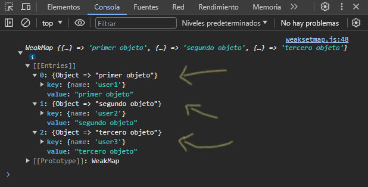

WeakSet
El objeto WeakSet te permite almacenar objetos débiles en una colección, son colecciones de objetos. Al igual que set, cada objeto WeakSet puede estar solo una vez; todos los objetos en una colección WeakSet son únicos.
Veamos como podemos crear un nuevo WeakSet:
let ws = new WeakSet([
{
"nombre": "ulisesafcdev",
"edad": 24
},
{
"nombre": "odiseodev",
"edad": 24
}
])
Podemos crear directamente ingresando valores llamando al contructor del objeto WeakSet, sus valores van dentro de corchetes, y como son colecciones de objetos, dentro de los corchetes van cada objeto separados por coma, como en el ejemplo anterior ( [ { ... }, { ... } ] )
También podemos agregar objetos con el método .add(objeto) asi como en el ejemplo siguiente:
let credito = {
"saldo": 1000,
"cuota": 49.15,
"interes mensual": 5.15
}
let perfil1 = {
"nombre": "ulisesafcdev",
"edad": 24
}
let perfil2 = {
"nombre": "odiseodev",
"edad": 24
}
let ws = new WeakSet()
ws.add(credito)
ws.add(perfil1)
ws.add(perfil2)
Esta es la manera recomendada en la que podemos agregar objetos a nuestro objeto WeakSet.
También podemos comprobar si un objeto se encuentra dentro de la colección de objetos WeakSet con el método .has(objeto), este nos devuelve un boolean, nos devuelve true, en caso de que exista, de lo contrario devolverá false.
Podemos eliminar un objeto determinado de la colección de objetos con el método .delete(objeto), devuelve un boolean, nos devolverá true cuando se elimine el objetos, de lo contrario, nos devolverá false.
console.log(ws.delete(perfil1)) // true
console.log(ws.has(credito)) // true
console.log(ws.has(perfil2)) // true
console.log(ws.has(perfil1)) // false
WeakMap
El objeto WeakMap es una colección de pares llave/valor en la que las llaves deben ser objetos con valores de cualquier tipo de dato en JavaScript, y el cual no crea fuertes referencias a sus llaves, es decir, la presencia de un objeto como llave en un WeakMap no evita que el objeto sea recolectado como basura. Una vez que se ha recopilado un objeto utilizado como llave, sus valores correspondientes en cualquier WeakMap se convierten en candidatos para la recolección de basura, siempre y cuando no se les mencione fuertemente en otro lugares.
Creando un nuevo WeakMap:
let wm = new WeakMap()
let obj1 = {
"name": "user1"
}
let obj2 = {
"name": "user2"
}
let obj3 = {
"name": "user3"
}
Hacemos uso del constructor para crear un nuevo WeakMap, recordar que es una colección de pares llave/valor, donde la llave debe ser un objeto. Por ello hemos creado 3 objetos. Para empezar a ingresar nuestra colección de pares en nuestro WeakMap, usamos el método .set(llave, valor).
wm.set(obj1, "primer objeto")
wm.set(obj2, "segundo objeto")
wm.set(obj3, "tercero objeto")
Como "llave" definimos los objetos que hemos creado, y como valor escribimos lo que queremos asignar como un valor, puede ser desde un objeto o una función.
Para obtener el valor de cada colección, usamos el método .get(llave). En caso de no encontrar un valor a la llave asociado nos devolverá "undefined". Si definimos una llave que no hemos definido, nos dará error.
Para comprobar si se ha asignado un valor a una llave en especifico se utiliza el método .has(llave), este nos devolverá un boolean, devolverá true si tiene un valor asignado, de lo contrario, devolverá false.
Para eliminar un valor asociado a una llave, usamos el método .delete(llave), este devolverá un valor boolean, devolverá true en caso de éxito, si no devolverá false.